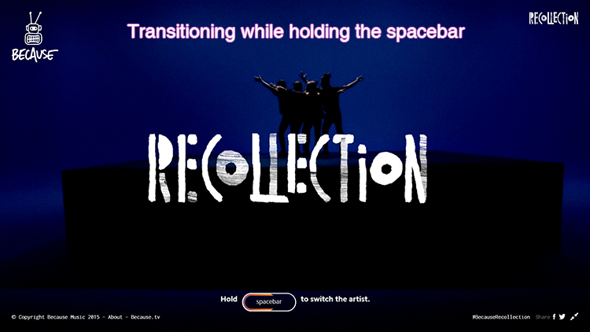

I preferred browsing through https://www.chromeexperiments.com because it was more organized and to the point. I liked Because Recollection on page 9.
The experiment is an interactive website that celebrates the 10 year anniversary of the music label "Because Music".
I really liked how the website had many different ways of interacting with the user while introducing artists, their music, and artworks.
When you enter the website, you have to hold the 'spacebar' key to move on to a random artist page. You can also make it fullscreen.

Here are some cool things you can do on the website: